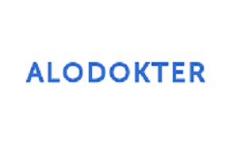

Lowongan Alodokter
Dibutuhkan IS Business Analyst

Kualifikasi
• Degree in Computer/Software/Information system Engineering with min GPA 3.00
• Has minimum 3 years experience as a IS/IT Business Analyst
• Having experience in startup company would be an advantage
• Fluent in English
• Have a good analytical & problem solving skill
• Has project management experience in managing complex system or end to end process that involved multiple department/functions or vendors
• Has handled an automation system and portal system
• Experience in DML in one of Database System
• Experience in creating business process flow and modeling
• Has experience in managed multiple projects
• Has deep knowledge and experience in implementing SDLC methodology minimum waterfall methodology (experience with agile methodology would be advantage)
Diposting tanggal 05 Jan 2021
||
Lowongan IDN Media
Dibutuhkan Business Analyst
Job Description
• Research, perform benchmarking, analyze data, and help make recommendations.
• Help team lead to oversee multiple cross-functional, organization-wide projects, and initiatives. Bring together important stakeholders and help drive decisions.
• Help determine Objectives and Key Results (OKR) and update dashboards as needed.
• Work with subsidiaries and Team Lead to help set strategic priorities.
Kualifikasi
• Min. 2-3 years experience in consulting firm or in corporate as business analyst
• Exceptional analytical and conceptual thinking skills
• The ability to influence stakeholders and work closely with them to determine acceptable solutions
• Experience creating detailed reports and giving presentations
• A history of leading and supporting successful projects
Diposting tanggal 05 Jan 2021